01 · Where it started
Eight years of robot cars
The robot car isn’t new. The first one, in 2018, was a kit: a clear plastic frame, four yellow wheels, a small Arduino computer and an ultrasonic sensor that works like a bat’s hearing to avoid walls. Everything was joined with loose, colourful wires.
Since then it has been taken apart and rebuilt many times, each version a little smarter. The latest one is called Teuvo. He sees through a camera, talks, listens, and uses AI to decide where to drive.
The project started in 2018 as a kit car: an Arduino Uno, a motor driver board, an ultrasonic distance sensor on a small servo, and jumper wires on a breadboard. Over the years it was rebuilt many times, and in 2025 it got a hand-soldered perfboard version.
Also in 2025 it gained a camera and AI vision. In April 2026 everything moved onto one thumb-sized computer, and in September it became Teuvo, a robot with a voice and a personality. Every one of those versions was wired by hand.
Eight years of iterations: an Arduino Uno kit car (2018), many rewirings, a hand-soldered perfboard rebuild (2025), a two-ESP32 design with a camera and cloud vision (2025), then a single XIAO ESP32-S3 Sense running everything (April 2026). Teuvo, the current persona, adds an LLM planner, speech and conversation.
The hardware never had a design file. Each generation’s wiring lived in hand-written tables, and this autumn’s work is what replaced that.
2018: Arduino Uno, an L298N motor driver, an HC-SR04 on a servo, a mini breadboard and jumpers on a 4WD acrylic chassis (photo). Many rewirings followed, then a hand-soldered perfboard build in 2025. June 2025, into this monorepo: a Heltec WiFi LoRa 32 main controller and an ESP32-CAM over UART, with Claude or Ollama for vision. April 2026: robocar-unified on one XIAO ESP32-S3 Sense, with a slow Gemini Robotics-ER planner over a 30 Hz reactive executor. September 2026: Teuvo, with multi-turn voice conversation and a metal-body voice effect.
In-repo milestones: the dual-ESP32 car on 2025-06-28; the single-board firmware in #187 (2026-04-10); WIRING.md, README and CLAUDE.md in #204; the schemdraw schematic in #263; the Typst build guide on 2026-07-13; Teuvo as a conversational entity in #567 (2026-09-14). The controller split is ADR-016; camera DMA is pinned to core 1 so motor PWM on core 0 keeps its timing. The perfboard years survive in a sense: tools/kicad now generates perfboard layouts and step-by-step build sheets from the carrier netlist (#760, #857, #858).
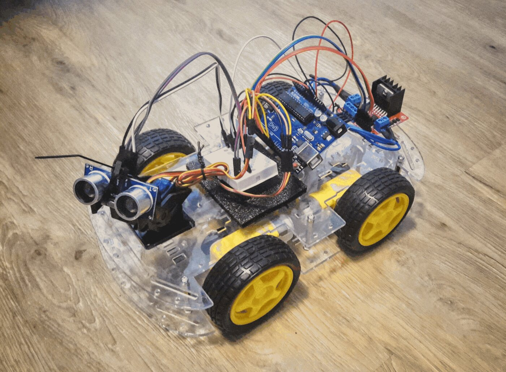
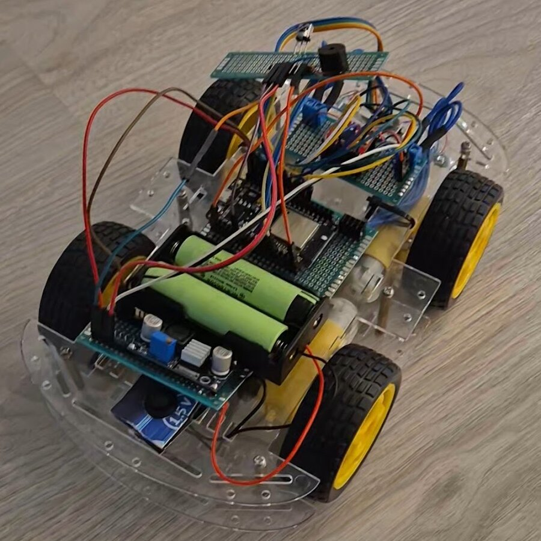
02 · Timeline
From an Arduino kit to Teuvo
Most of the eight years went into making the robot smarter. The step this page is about, turning the hand wiring into a proper factory-made board, happened this autumn and took about ten weeks.
The long run is about the robot getting smarter. The last stretch is about its hardware growing up: a master list of every connection in August and October, then a circuit board, cases and an order.
Two timelines. The first is the robot’s generations. The second is the ten-week hardware pipeline this page covers, taken from git log: about 80 commits, each stage consuming the one before.
The second list is from git log over tools/hardware, tools/kicad, tools/enclosure, tools/mechanism, the parts registry and the two carrier projects. ADR-021 waited six weeks for Teuvo’s voice work; after the join landed on Oct 4, every stage built on the one before.
References are PR numbers in laurigates/mcu-tinkering-lab. The integrated carrier’s review rounds were #812, #818, #819 and #832; the socketed carrier’s pre-order fixes were #823.
The robot
- 2018Arduino kit car with an ultrasonic sensorUno · L298N · HC-SR04 · breadboard
- 2018–2024Taken apart and rewired many times
- 2024Another rebuild, now on two lithium cellsL298N · 2 × 18650
- 2025A hand-soldered perfboard rebuildperfboard · 2 × 18650 · regulator module
- 2025Two boards, a camera and AI visionHeltec WiFi LoRa 32 + ESP32-CAM · in git from 2025-06-28
- Apr 2026One thumb-sized computer runs everything, on a hand-soldered perfboard carrier and jumper wiresXIAO ESP32-S3 Sense · #187
- Sep 2026Teuvo: a voice, a personality, conversation#567 · Gemini planner and TTS
The hardware, autumn 2026
- Aug 19The plan: one master list of every connectionADR-021 · #464
- Oct 4–11The list starts producing the wiring tables, diagrams and build guidetools/hardware · #636 #647 #680 #731
- Oct 13–15The list learns to describe a circuit board tooADR-027 · #758 #759 #789 #793
- Oct 16–18Board layout, three camera-head pieces, and a second, more integrated design#802 #803 #807
- Oct 18–22Review rounds and the files the factory needs#811 #820 #821 #832 · JLC rotation, fiducials
- Oct 22–233D-printed cases, price quotes, the ordertools/enclosure · jlcpcb-order skill #837
- Oct 24–25A design competition for the camera mountpan-tilt tournament · tools/mechanism
03 · The problem
Is it the code, or is it a wire?
Teuvo lives on a board Lauri soldered by hand, plus a lot of loose wires to five small helper boards. When something stopped working, the first question was always the same: is it the program, or the wiring? With that many wires, finding out could take weeks.
Every item in the list below actually happened while building Teuvo. None of them is interesting; each one just stalls the project. A factory-made board removes most of them, which leaves time for the fun part: how the robot behaves, what it connects to, and how people play and talk with it.
Teuvo runs on a thumb-sized computer (a XIAO ESP32-S3) on a hand-soldered perfboard carrier, with plenty of jumper wires out to the add-on boards for motors, servos, sound and sensors.
The real cost was diagnosing faults. A symptom like “the servos don’t move” or “the speaker hisses” could be the firmware, or any of the hardware causes below, and all of them happened. Each one stalled the project for a long time. On top of that, the notes on which pin goes where were copied into eight documents and drifted apart.
The hope for a manufactured board: spend the time on robot behaviour, integrations and interactions, and on the long list of ideas and features waiting to be tried, instead of on loose wires.
A microcontroller on a hand-soldered perfboard carrier, with breakout boards on jumper wires. Hardware faults show up looking exactly like software bugs, and there is no reproducible environment: the board you debug today is not quite the board you had yesterday. A manufactured PCB is the hardware version of moving from hand-configured servers to infrastructure as code.
The documentation had the classic duplicated-configuration problem too. Pin assignments lived in one C header and were copied by hand into seven other places; a firmware change left the docs wrong, and the one CI check did not even run on firmware-only changes.
The XIAO ESP32-S3 Sense on a hand-built perfboard carrier, with the five breakouts (motor driver, PWM driver, I²C mux, amplifier, GPIO expander) still on Dupont jumpers. Recorded in the repo from the Teuvo phase: “servos not moving” was a loose PCA9685 VCC lead (the 2026-09 bench, and the reason servo exercise exists, because five causes look identical from across the room); audio distortion was fixed by adding bulk capacitance; the ESP32’s brownout detector is off because motor inrush kept tripping it.
The docs had their own drift: ADR-021 counted seven hand-maintained restatements of pin_config.h, and the netlist was drawn twice by two tools. The goal of the PCB is to make the hardware a known quantity, so effort goes to behaviour, integrations and interactions.
XIAO ESP32-S3 Sense on a perfboard carrier with TB6612FNG, PCA9685, TCA9548A, MAX98357A and a CJMCU-2317 on Dupont. Teuvo-phase evidence in the repo: the loose PCA9685 VCC lead (packages/robocar/unified/CLAUDE.md, servo section); C3, 470 µF at the MAX98357A’s Vin, added after audio distortion (WIRING.md); CONFIG_ESP_BROWNOUT_DET=n for motor inrush, so an undersized rail gives no warning. The method that came out of it is .claude/rules/analog-fault-isolation.md and the audio-static-debugging skill: measure each stage, read the datasheet, confirm the instrument can see the effect.
The carrier answers several of these by construction: a poured ground on two layers, bulk and decoupling capacitors placed by the netlist, a fused pack input, test headers J11–J15 (supply, I²C, ground posts, and UART0 TX carrying the log mirror), and a ribbon pinned so a reversed plug harms nothing. On the docs side, schematics-check.yml was path-filtered to docs/schematics/**, so a firmware-only pin change never ran it.
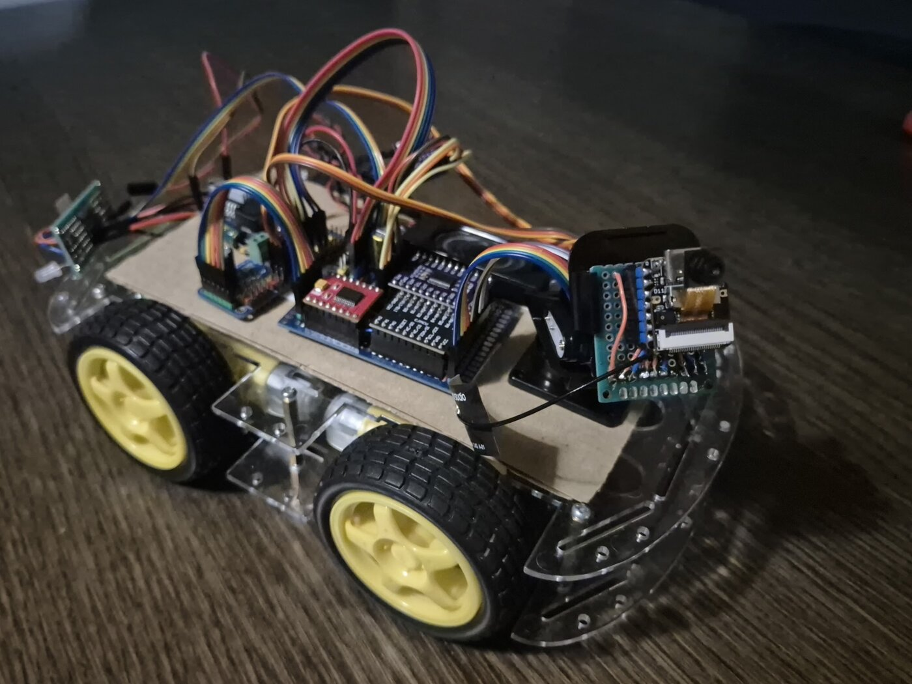
Every one of these happened during the Teuvo phase
- A bug in the code
- A loose wire that looks connected
- A cracked solder joint
- Poor grounding
- A wire never soldered, unnoticed among all the others
- A missing bulk capacitor
- A missing filter capacitor
- Voltage drop
- A tiny capacitor knocked off the amplifier board just as new firmware was flashed
04 · The idea
Keep each fact in exactly one place
Think of a recipe. Instead of rewriting it by hand in every cookbook, you keep a few master cards and let a machine print every cookbook from them. If you change a card, every book updates.
Two of the master cards already existed: one describing the little computer, one describing what the robot’s program expects. The new third card says which physical part each wire goes to.
Every wiring table was really three facts glued together: what each pin on the little computer is called, what job the robot’s program gives each pin, and which add-on board that pin is wired to.
The first two were already written down once. The third was new: a file called hardware.toml. A program combines the three and produces every document, so they can no longer disagree.
A pin table is a join of three sources: board facts (a reference page per board), project roles (the C header the firmware compiles) and parts and nets (the new hardware.toml).
tools/hardware parses the three and joins them. The header stays canonical. The TOML holds no pin numbers, only role names that must resolve against the header, so it can only be wrong about which part a pin goes to, and that is checkable.
ADR-021 treats the pin table as a three-way join: board facts in docs/reference/boards/<board>.md (D4 ↔ GPIO5, strapping pins), project roles in main/pin_config.h (canonical, hand-written), and parts and nets in hardware.toml.
The header cannot say which part a pin goes to; that missing fact is the only thing the TOML adds. A completeness gate makes every pin either wired or explicitly excused with a reason.
Three layers: board facts (shared across projects; the XIAO page carries the pad table with Side/Pos), project roles (pin_config.h, plus extra_headers read for #define values only) and parts/nets (hardware.toml). tools/hardware fails when a role does not resolve, when a role lands on two GPIOs or two roles on one pad, when a rail hits an MCU signal pad, and when a pin is neither on a net nor in undrawn with a why (#715, #772, #687).
Delivery is marker-block injection for Markdown (<!-- BEGIN GENERATED -->, with --check) and a live import for the schemdraw circuit. Schematic layout stays hand-authored; only labels and net endpoints are generated.
05 · The master list
What hardware.toml looks like
It’s a plain text file, a bit like a shopping list with labels. Each entry names a part, such as the sound chip, and says what it connects to. A program checks every entry; if something doesn’t match the robot’s program, it refuses and says why.
A plain text file listing each part (its name, its label on the board) and each connection (“the bit-clock pin goes to the amplifier’s BCLK input”). Some entries are marked as “circuit board only”, like a safety fuse that the hand-wired version never had. One file describes both versions of the robot.
A TOML file of parts, nets, power rails, mux channel buses and a cable. A role must be a macro name in the header or the tool fails. A build key gives two views of one file: harness for the jumper-wired robot and carrier for the PCB.
1,168 lines for the socketed carrier, 1,412 for the integrated one. A part names its registry entry and reference designator; a net names a role and the part pin it lands on. The parts registry carries the KiCad symbol, footprint, LCSC number and the source the pin order was read from. Carrier-only entries (fuses, pull-ups, decoupling, mounting holes) take build = "carrier", so it is one source, not an overlay.
Socketed: 16 [[bus_nets]], 14 [[channel_nets]], 15 [[nets]], 4 [[outputs]], 11 [[rails]], 4 [[undrawn]], one [[cables]] (the IDC 2×7 with spare_heads U3/J16 and U4/J17). Registry polarity is a tripwire: every +/− or K/A must be proved by the symbol’s pin names, the footprint’s silkscreen or registry.CONVENTIONS, or the build fails.
[parts.amp] name = "MAX98357A" part = "adafruit-max98357a-socket" ref = "A4" [[nets]] role = "I2S_BCLK_PIN" # a macro in main/pin_config.h to = "amp.BCLK" [parts.fuse_in] build = "carrier" # on the PCB only part = "polyfuse-1812" lcsc = "C47263807"
06 · Before the circuit board
The master list’s first job was paperwork
At first the master list had a smaller job: producing the paperwork for the hand-wired Teuvo, meaning his wiring tables, diagrams and printed build guide. It described one robot, the one on jumper wires.
To make a factory board, the list had to describe a second version of the same robot, with extra parts only a circuit board needs, like a safety fuse. So each entry got a tag: “both versions”, “hand-wired only” or “circuit board only”. One list, two robots.
For its first ten days, from 4 October, hardware.toml only fed documentation: the wiring tables, the power diagram, the pinout pictures and the pin labels in the build guide. It also brought a new rule: every pin must be either connected or explicitly excused with a reason.
On 14 October it was extended to describe a circuit board as well, by marking entries as belonging to the hand-wired version, the board version, or both. The balancing robot’s board was the first to use it; the robocar’s followed the next day.
Phase one, Oct 4–11: the join’s only consumers were docs: marker-block tables in WIRING.md, a generated power diagram, pinout PNGs, pin_defs.typ for the Typst guide and labels in the schemdraw schematic. hardware::gen regenerated all of it.
Phase two, Oct 14: a build key splits the file into a harness view and a carrier view. join() defaults to the harness view, so no document changed. The file then grew new constructs as the PCB needed them: mux channel buses, per-load outputs, a cable.
Docs only (Oct 4–11): WIRING.md pin tables (#647), the power diagram from modelled rails (#680), PCA9685 channel nets for pinout labels (#695), board pinout images (#667), and hardware::gen re-rendering the schematic and recompiling the guides (#731). Checks added: every role on a net or excused (#715), no rail on an MCU signal pad (#687).
Adapted for KiCad (Oct 14–15): harness and carrier views (#758), balancebot carrier schematic from the join (#759), two roles on one GPIO or part pin rejected (#772), I²C mux channel buses (#777), per-load [[outputs]] (#778), the cable construct (#787), the parts registry (#789) and the robocar carrier view (#793).
Pinout drawing reads each part’s board page, built from the vendor’s Eagle file (#629, tools/hardware/pinout.py). Breakout pad centres were recorded in the board pages and re-derived on demand (#775), which let tools/kicad build socket footprints from them (#788). The [[cables]] entry carries spare_heads, so the two unused head boards get their own HEAD2_*/HEAD3_* nets. Carrier-only entries (fuses, pull-ups, decoupling, holes, test headers) take build = "carrier", and the perfboard generator reads the same carrier netlist (#760).
07 · What reads it
One file feeds every document and the factory
From that one list, the computer produces the wiring instructions, the printable build guide with its pictures, and the files the factory uses to make the circuit board. If someone changes the list and forgets to regenerate, an automatic check flags it straight away.
Two kinds of output come from the list. For people: wiring tables, pin diagrams and a printable build guide. For the factory: the circuit drawing, the parts list with order numbers, and the placement file for the assembly robots. The 3D-printed cases are then built from the finished board design.
- Harness view → docs: WIRING.md tables and power diagram, pin bindings for the build-guide PDFs, pinout images, the docs schematic SVG.
just hardware::gen, gated byhardware::checkin CI. - Carrier view → fabrication: the KiCad schematic, the board net check and stamp, the BOM and placement file, a perfboard layout.
- Downstream: cases read the committed board file; the pan-tilt reads the head board’s outline.
- Harness view: WIRING.md pin tables and power diagram (marker blocks),
pin_defs.typ→ build-guide PDFs, board pinout images, the schemdraw SVG.just hardware::gen/::check; CIhardware-check.yml. - Carrier view:
.kicad_schand library tables, board net check and stamp,bom-jlc.csv/cpl-jlc.csv, perfboard layout and wire list.just <p>::carrier-*; CIcarrier-check.yml.
A pin move in pin_config.h now shows up as a red check everywhere it matters, instead of a stale PDF.
join() defaults to the harness view, so existing docs consumers read what they read before; tools/kicad asks for build="carrier". hardware::gen also re-renders the schemdraw SVG via schematics::render-all and recompiles the Typst guides (#731). The BOM’s LCSC numbers come from the registry for ICs and the inductor, and from hardware.toml for passives. kicad.perfboard --check regenerates and diffs each perfboard drawing and wire list in CI.
08 · The circuit board design
The board design is generated, not drawn
Normally an engineer draws a circuit board by hand in design software. Here a program writes the design from the master list, positions the parts from a second short list, and then another program draws all the copper wiring automatically. Nobody edits the result by hand: to change it, you change the list and run it again.
The free design program KiCad is used for the board, but its files are written by our own small program from the master list. Part positions come from another small file (board.toml). An auto-router called Freerouting draws the copper tracks. In the picture, red is copper on the top of the board, blue on the bottom, yellow is the printed text.
A stdlib-only Python writer emits the .kicad_sch from the carrier view, deterministically: byte-identical output across Python versions, UUIDs derived from content. board.toml holds placement, cut lines, net classes and fixed tracks; pcbnew places and Freerouting routes. A vendored, hash-pinned library subset means local runs and CI read the same bytes. The generated files are treated as build output: never hand-edited.
ADR-027 extends the join to fabrication. The trigger: the balancebot carrier’s hand-typed netlist and check script both restated the join, and one drifted (a divider wired to a pin the header called spare, while the check passed). Now schematic.py writes the schematic; connections are global labels on pin stubs. Alternatives were rejected on measurements: kicad-sch-api dropped every global label on a round trip; kicad-mcp-pro’s output differed every run. Freerouting never routes the same way twice, so you commit the board you checked.
UUIDs are uuid5 of the carrier directory and the item; output is byte-identical across Python 3.11, 3.13 and 3.14. pcbnew is confined to tools/kicad/pcb/ under KiCad’s bundled Python 3.9, reading a JSON board input built from the netlist and board.toml. The library subset (tools/kicad/lib/, KiCad 10.0.6 stock CC-BY-SA plus Seeed XIAO MIT) is pinned per file in MANIFEST.tsv and shadows the stock nicknames. KiCad 10 matches footprints by reference, not UUID, so DRC with schematic parity reports 0/0/0 without re-routing.
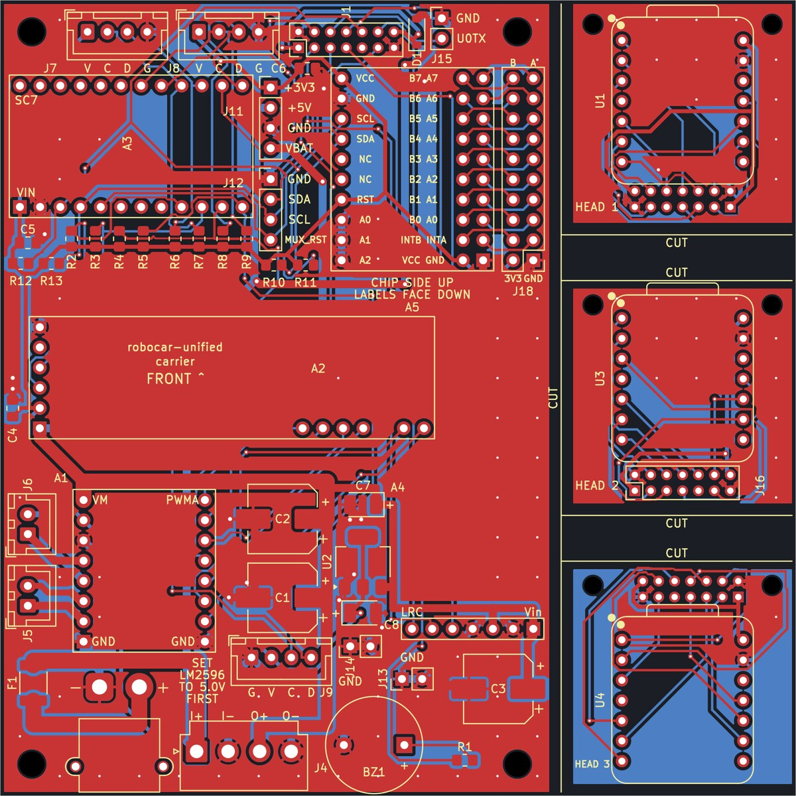
09 · Automatic checks
Every change is checked before it counts
Every time anything changes, a set of automatic checks runs, like a spell-checker for electronics. They confirm the drawing and the board agree with the master list. There’s also a sealed “receipt” proving the design software itself looked at the exact files that were saved.
On the laptop, KiCad itself checks the design: are all connections valid, does the board break any manufacturing rule, does the board match the master list. Only when everything passes does it write a small receipt file. The online checks (which run without KiCad installed) then verify that receipt matches the files.
Locally, carrier-check runs KiCad’s electrical and design-rule checks, compares KiCad’s netlist with the join’s, and only then writes a stamp: hashes of the committed schematic and board plus the normalised netlist. CI has no KiCad: it runs unit tests, verifies library hashes, regenerates and diffs the schematic, checks the board’s parts and nets, and verifies the stamp. It stops accidental drift, not deliberate forgery.
Local, KiCad 10: ERC, DRC with schematic parity, netlist parity with the join, every pad’s net; then the stamp. CI, no KiCad: tools/kicad tests, vendored library hashes, schematic regenerate-and-diff, board parity, stamp. The stamp closes two holes: a writer bug plus a regenerated schematic would compare equal to itself, and text-editing a pad’s net would pass a net-only check while the copper still joins the old pads.
<name>.check.json records sha256 of the committed .kicad_sch and .kicad_pcb and KiCad’s own netlist of that schematic, normalised. Only kicad.check writes it, as its last step; kicad.stamp verifies it in CI. Running ERC/DRC in the kicad/kicad:10.0.6 container was deferred: 771 MiB compressed, 2.6 GB unpacked, amd64-only for 10.x, no Java for Freerouting. Every gate has a “verify the gate can fail” control in the carrier-pcb skill.
10 · Version 1 · ordered
The socketed board
The first version keeps the same five helper boards, but instead of loose wires they plug into sockets on one solid circuit board. Any of them can be pulled out and swapped. Along the right side are three small square pieces that get sawn off and mounted in the robot’s moving head; only one is used, the others are spares in different shapes.
A 10 × 10 cm board. The five add-on boards plug into sockets, so nothing has to be soldered to them. Three small “head” pieces, each 3 × 3 cm, fit the camera mount; they differ only in where the ribbon cable plugs in. The cable is arranged so that plugging it in upside down can’t damage anything; it just won’t work until flipped.
100 × 100 mm, two layers. Breakouts sit in female headers, so any module can be swapped. Three 29.5 mm head boards share the panel and are sawn apart after delivery; a 2×7 ribbon joins the chosen head to the main board, pinned so a reversed plug is harmless. Only passives and the regulator are surface-mount, so factory assembly was cheap.
One PCB, four pieces: a 70.5 mm main board with the breakouts socketed, and three 29.5 mm head boards for the pan-tilt cradle (hole spacing confirmed by Lauri on 2026-10-16). One outline with silkscreen saw lines, because JLCPCB charges a mouse-bite panel as several designs. The ribbon pinout pairs each pin with a safe partner: 5 V on 5 V, GND on GND, SDA on SCL. SMD passives and the AMS1117 only: about €24 to assemble five.
A1 TB6612FNG in 2×1×8 headers; A2 PCA9685 on its JP3 side header and PWM pins 8–13; A3 TCA9548A; A4 MAX98357A; A5 CJMCU-2317 at 0x20 on mux ch2 with a J18 2×10 mirror header. U2 AMS1117-3.3; D1 B5819W between 5V and XIAO_5V (the XIAO’s 5V pad is VBUS); F1 4 A hold PTC at J3 (XT30, pad 1 “−”); C1–C3 470 µF bulk; R2–R13 2.2 kΩ pull-ups on mux ch0–4 and upstream. IDC reversal maps pin n to 15 − n; UART0 TX lands on the unconnected pin 9. Copper-free bands ≥ 3 mm under the cut lines.
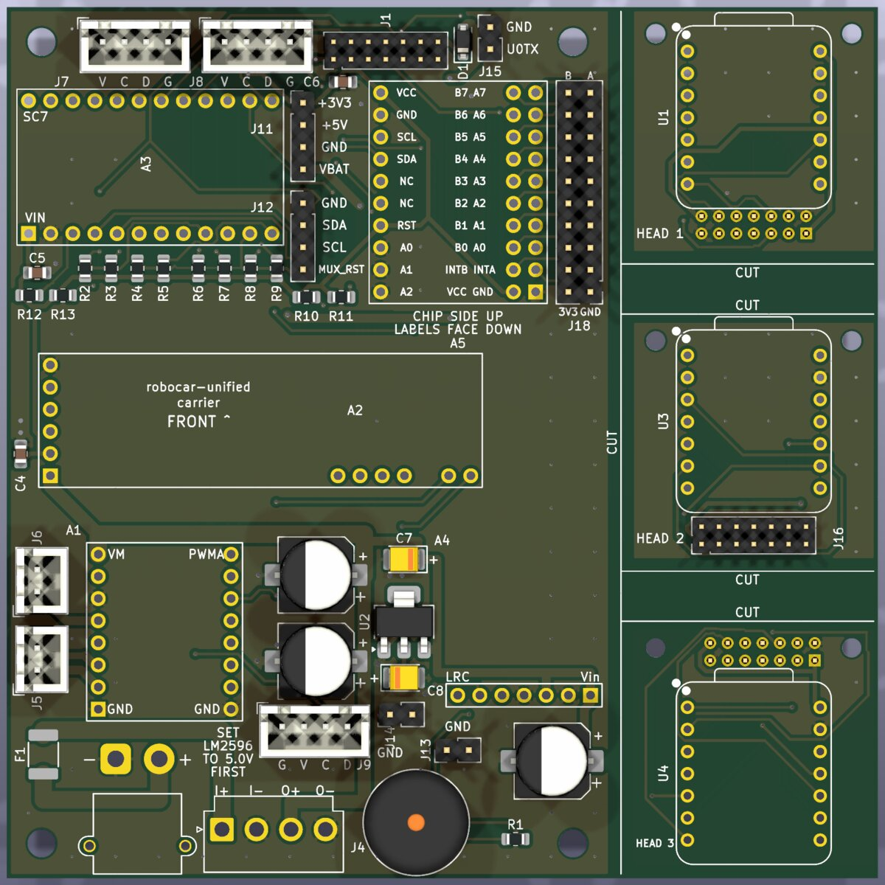
11 · Version 2 · on hold
The integrated board
The second version puts the actual chips straight onto the board instead of plugging in helper boards. It’s smaller and neater, but harder to repair and needs the factory to solder the tiny chips. It’s finished and ready to order, but on hold: the first version gets tested first, and anything learned goes into this one.
The same circuit, but with bare chips soldered by the factory instead of plug-in boards, plus its own power supply. The main board is 30 % smaller. The trade-off: a broken plug-in board can be swapped in seconds, a broken chip needs rework with special tools. It’s waiting until the first board has been tested.
Same pin header, same heads, same net names (so the two netlists compare by name), but the breakouts become chips and the external buck module becomes an on-board converter. Main-board area drops 30 %, part count nearly doubles, and everything new is SMD, so JLCPCB assembles it. Deferred until the socketed board has been bench-tested.
| Main board | Socketed | Integrated |
|---|---|---|
| Area | ≈ 7050 mm² | 4902 mm² (−30 %) |
| Parts | 40 | 77 |
| SMD / through-hole | 20 / 20 | 58 / 19 |
| 5 V supply | LM2596 module | TPS563208 buck |
| Assembly | passives | 25 BOM lines, 60 parts |
Passes every gate and seven review rounds; held until the socketed board’s bench test.
U5 TCA9548APWR (TSSOP-24), U6 PCA9685PW (TSSOP-28) with 220/47 Ω series resistors, U7 TB6612FNG (SSOP-24), U8 MAX98357AETE+ (TQFN-16) behind FB1, U9 MCP23017-E/SS, U10 TPS563208 with L1 4.7 µH (SRN6045TA), EN divider R25/R26 = 100k/36k, Q1 DMP3013SFV reverse-polarity P-FET and F1 3 A PTC. 14 Extended BOM lines; thinnest stock was L1 (179) and the MCP23017 (424) on 2026-10-19. Three fiducials for the 0.5 mm-pitch TQFN. Courtyard area 5381 → 2298 mm² (just robocar-unified-integrated::compare).
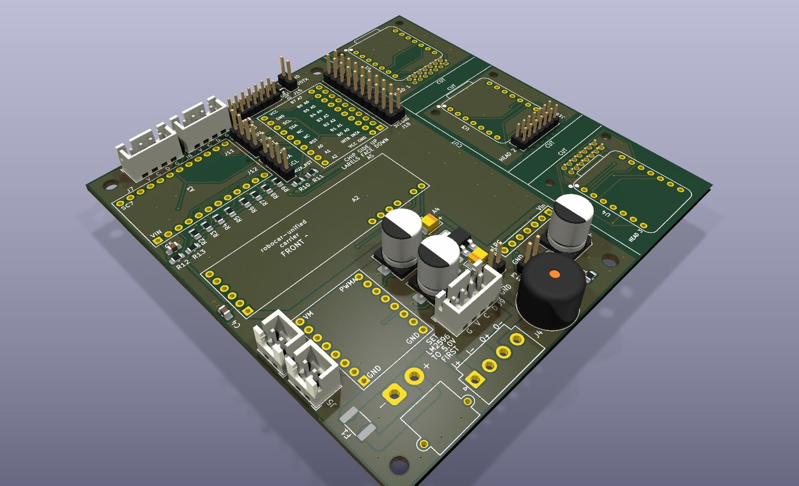
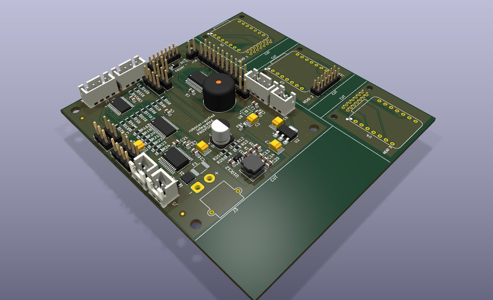
12 · A second opinion
Passing every check is not the same as being right
The automatic checks only confirm the design matches what we said we wanted. They can’t tell whether what we wanted was a good idea. So a separate AI reviewer, told to be suspicious, compared the design with the chip manufacturers’ manuals. It found real problems, such as a setting that would have slowly drained the battery flat. Each fix was checked, and then the review ran again; this took seven rounds.
Checks prove the board matches the plan; they don’t prove the plan is good. A separate, deliberately critical AI reviewer read the board against the chips’ datasheets. Examples it caught: the power supply would have drained the battery far too low, and the battery connector’s plus and minus are easy to swap without any check noticing. Every finding was verified before acting on it, because the reviewer can be wrong too.
Gates check what was declared; a review finds what wasn’t. A read-only pcb-reviewer agent reviews the routed board adversarially against datasheets. The loop: verify each finding against the board (it’s model output), fix in the TOML, re-route, re-measure with carrier-measure, review again. On the integrated board every fix round introduced a regression the next round caught.
- Buck EN tied to VBAT: would drain a 2S pack to about 1.7 V per cell.
- Pulse-skip regulator: cannot sink motor braking energy; swapped for the forced-continuous sibling.
- XT30 pad 1 is “−”: reversed, it passes ERC, DRC and every net check.
- 0.10 mm silkscreen: the board predated the fix by three minutes.
Seven rounds on the integrated carrier. The power findings became an 11-item checklist rule.
TPS563201’s 75 % max duty cycle needs 6.7 V for 5 V out, above a 2S pack’s end of discharge → TPS563208 (forced-continuous, sinks). EN divider 100k/36k: guaranteed on by 6.3 V given VENH max 1.6 V and REN min 600 kΩ (SLVSD90B §5.5). VFB min 749 mV puts R12 = 56 kΩ at 4.94 V, the TB6612FNG’s 0.4 A row. The buck input reached its caps through one 0.6/0.3 mm via and a 0.6 mm neck (≈ 26 °C rise at 2.5 A, IPC-2221). README numbers come only from carrier-measure: a layer-blind script once reported “no via” on a path through two.
13 · Cases
Cases built from the finished board
Each board piece gets a 3D-printed case, designed by a program that reads the finished circuit board design, so the holes and screw posts always line up. It refuses to produce a case if anything bumps into the board or if any wall is too thin to print.
A program builds an open tray and a closed box with a lid for each board piece, reading the exact part positions and heights from the board design. Two checks must pass: the case may not collide with the board, and no wall may be thinner than 2 mm. The thin-wall check found three printing problems the first time it ran.
tools/enclosure (build123d) reads footprint positions and mounting holes from the committed .kicad_pcb and heights from KiCad’s STEP export; only parts without a 3D model get a height in config, with a source. enclosure::gen exits non-zero on a clash or a wall under 2.0 mm. The upload site’s own thin-wall warning is a heuristic, not a substitute.
Board on short solid standoffs (self-tapping into a blind pilot), lid into four corner bosses, cable windows sized to a mated plug. Gate 1: case ∩ board STEP must be empty. Gate 2: 20,000 inward rays, nothing under 2.0 mm. The breakouts in the renders are look-alikes built from tools/enclosure/modules.toml, since the vendors publish no 3D models for them (#842). Ordered as white resin.
build123d 0.13.0, Python 3.14.8, stdlib kicad.sexpr reader. Pilot holes M3 2.5 mm, M2 1.6 mm, min_standoff 4 mm of thread; a boss with under MIN_THREAD 4 mm is dropped, and fewer than two is an error. The ray gate checks the 64 thinnest readings against a ring of neighbours, so a graze along a tessellated facet (a pan-tilt yoke read 0.01 mm where it is 1.0) isn’t a wall. build123d must never be imported under tools/kicad, whose tests run on stdlib-only Python.
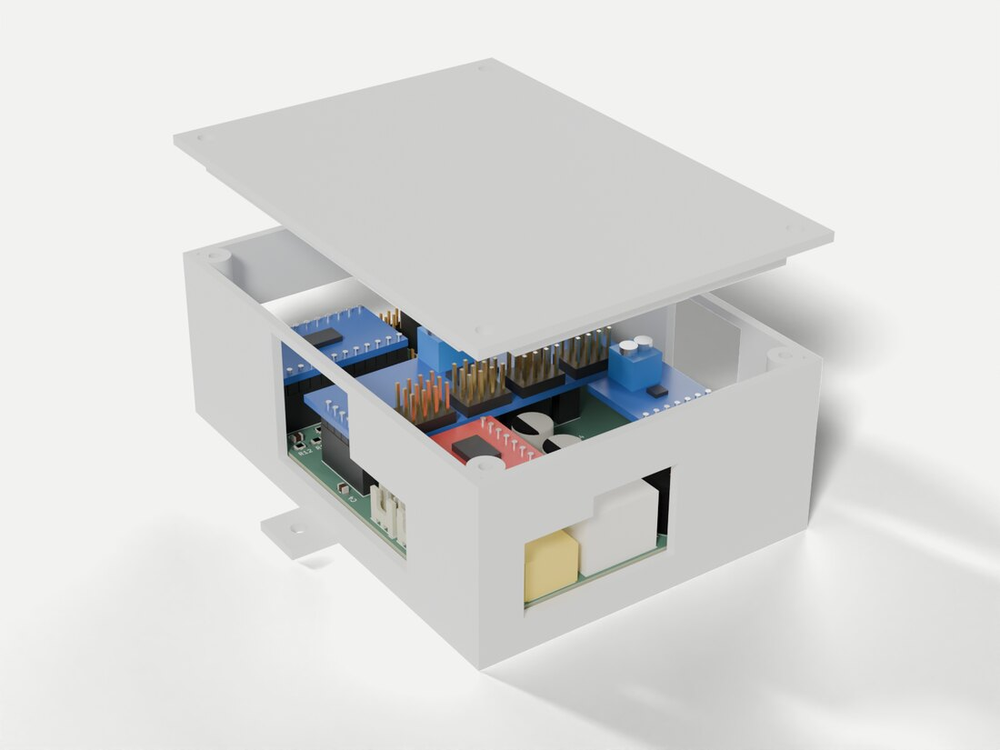
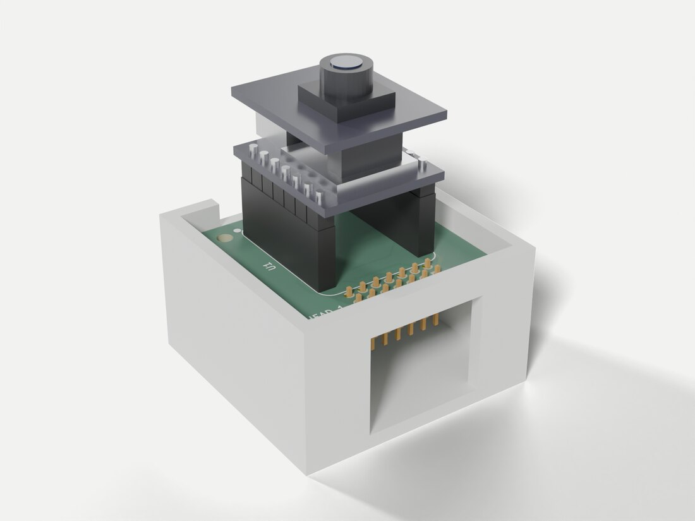
14 · The camera mount
Five designers, one servo, three judges
The camera sits on a small motorised mount that turns left-right and up-down. The stronger motors we wanted didn’t fit the cheap mounts you can buy. So we ran a design competition: five AI designers each got a different style brief, all designs were tested the same way, and three AI judges scored them.
The camera’s pan-and-tilt mount needed redesigning for sturdier metal-gear servos, which are taller than the usual ones. Five AI designers with deliberately different briefs (simple bracket, snap-together, a robot “face”, a lighthouse, a camera gimbal) each produced a 3D design. The same collision test and wall test checked all five, then three judges scored them.
A multi-agent workflow: shared fixtures first (servo envelopes, the head board, a clash sweep over the full travel, the wall gate), so all entries were judged against the same geometry. Each parametric build123d design was inspected independently, revised, and scored by three judges. Inspectors found 59 issues in designs whose designers had reported success.
The TowerPro MG90D stands 19.8 mm below its tabs against the SG90’s ~16, so no kit fits. .claude/workflows/design-tournament.js ran five designers, inspectors and three judges (36 agents over two runs, one session limit in the middle, resumed from cache). Clash sweep pan ±90° × tilt ±45°. The gimbal won by half a point.
Fixtures in pan-tilt/common/: MG90D and SG90 stand-ins (TowerPro’s A–F dimensions, the rest marked as estimates), stock horns, head 1 with its XIAO stack and J2 ribbon keep-out, world frame +X forward / +Z up / plate top at z 0. check.py reports every allow excuse. Barrier results are null-filtered after the first run died on ranking[0][0] when all judges hit the session limit.
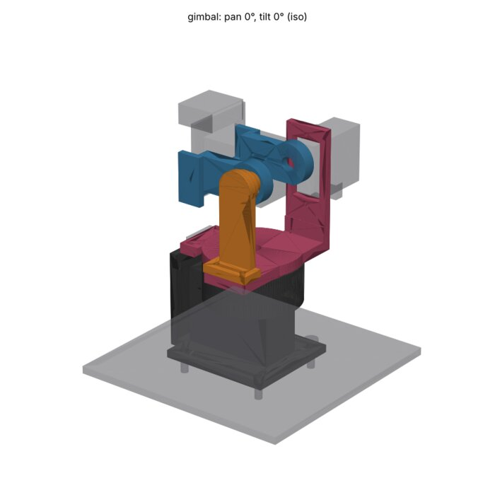
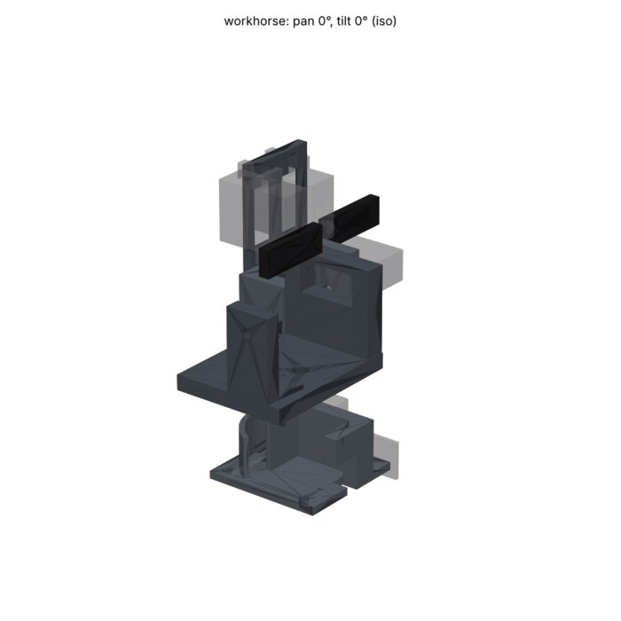
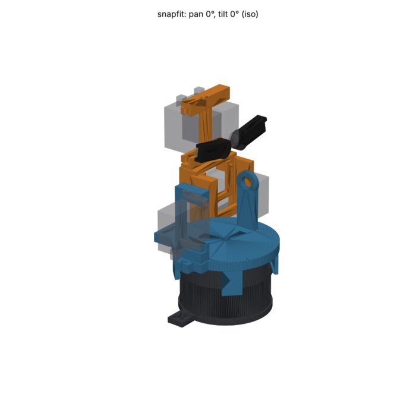
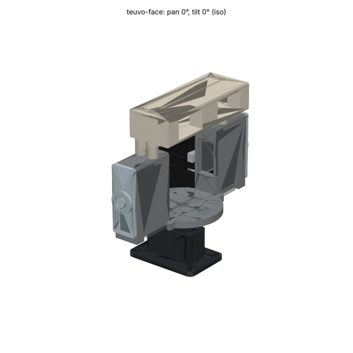
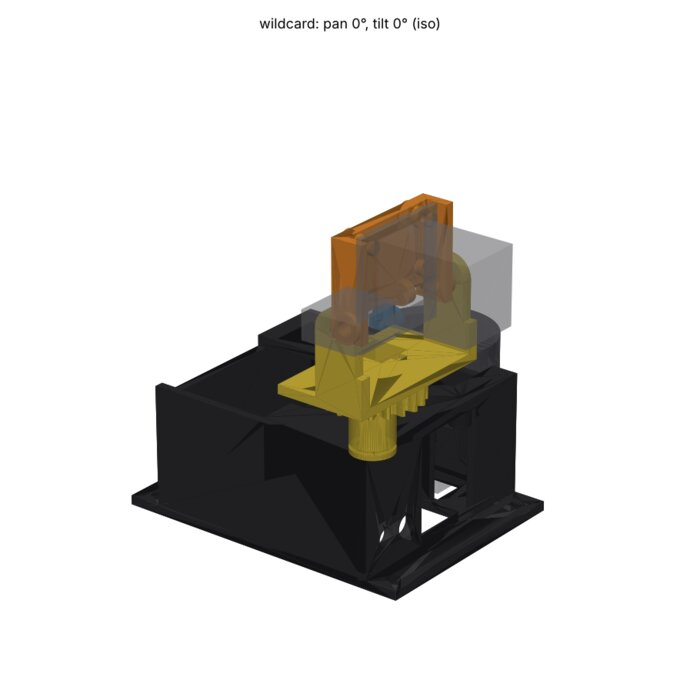
15 · The winner
A camera gimbal on a ring bearing
The winning design tilts the camera around the point where its lens “sees”, so the picture doesn’t shift sideways when it looks up or down. A proper ball bearing carries the weight, so the small motors only do the turning. The judges’ criticisms were fixed, and the best ideas from the other entries, like little eyebrows, were added. It isn’t ordered yet.
The gimbal tilts around the camera lens itself and carries the load on a ball bearing rather than on the servo. The final version fixes every point the judges marked down, borrows three ideas from the runners-up (including eyebrows from the robot-face entry), and passes the collision test over the full range of motion. About $15 in printed nylon; not ordered yet.
Tilt axis through the camera’s entrance pupil (no parallax when tilting), pan axis under the centre of mass. A ring bearing takes thrust; the servo only supplies torque. The print version fixes each judge deduction, grafts three ideas from the runners-up, and passes the clash gate over the full travel with the ribbon modelled taut. The gates were then extracted into tools/mechanism for reuse.
A 6705ZZ ring bearing takes thrust and tipping moment; the cut-down horn floats ±1 mm in a printed keeper, so the pan servo carries torque only; the tilt idler runs in an MR128ZZ. Fixes: a screwed bearing cap, crush ribs against horn backlash, ribs on the uprights, service access down the pan axis. Grafts: wildcard’s undersize-and-sand bearing fit, teuvo-face’s brows and its one-order material sheet. Zero clashes; thinnest wall 1.0 mm; about $15 in MJF PA12.
Deductions fixed: outer race held only by 0.15 mm crush ribs, ±1° horn-slot backlash, 3 mm uprights loaded in their weak direction, poor service access, ribbon spans sized by chord rather than swept, no brows, lens at 76.5 mm (now 80.3). Two remaining excuses: the keeper ribs’ deliberate crush on the horn, and the ribbon touching itself at its shelf tie. Rejected grafts: workhorse’s brass pivots and drum, snapfit’s HORN_SLACK, wildcard’s twin-bearing hub. The nodal tilt suits ADR-025’s head-aim bearing maths.
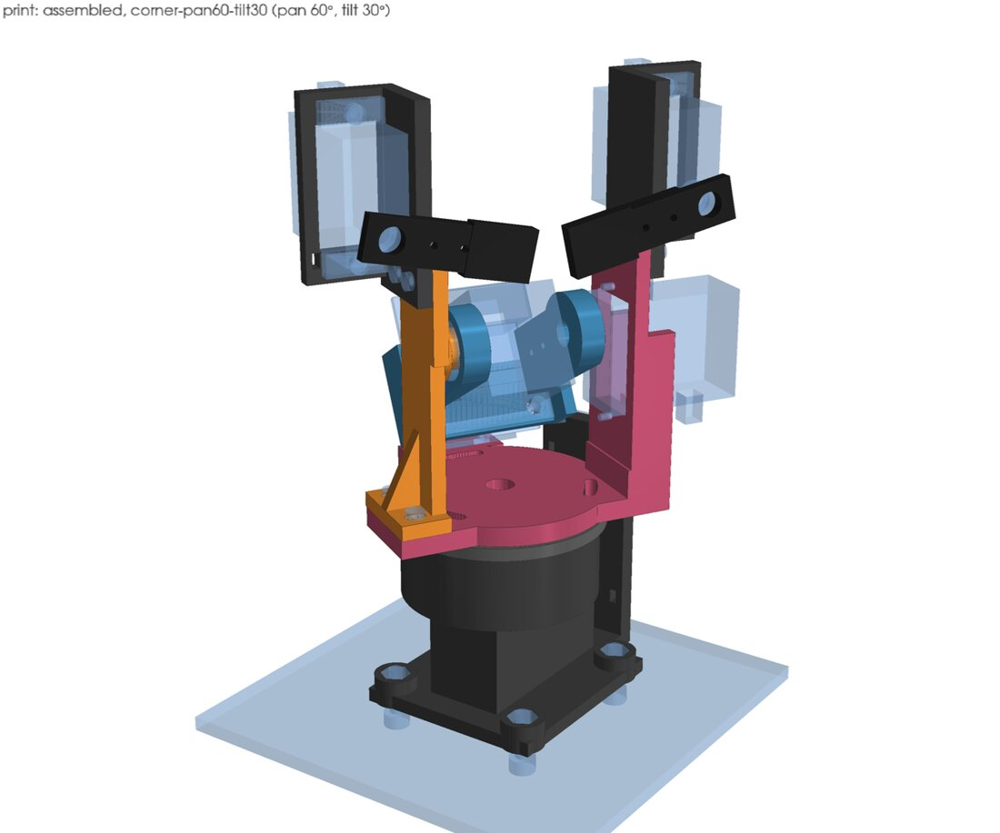
16 · How Claude was set up
Written-down lessons and repeatable commands
Claude, an AI assistant, wrote most of the programs and ran them. To stop it repeating mistakes, every lesson learned was written into notes it reads automatically next time, and every routine job became a fixed command that always behaves the same way. A separate, more suspicious AI did the reviewing.
Claude Code did most of the building. Three things kept it reliable: short rules that load automatically when it works on certain files, longer “skills” that describe a whole task and its known pitfalls, and one-line commands for every mechanical step, so Claude, Lauri and the online checks all run exactly the same thing.
| Layer | Here | Job |
|---|---|---|
| Rules | kicad-scripting, enclosure-generation, power-stage-checklist | Load when a matching path is edited |
| Skills | carrier-pcb, enclosure-cad, printed-mechanism, jlcpcb-order | A whole workflow and its pitfalls |
| Agent | pcb-reviewer | Read-only adversarial review |
| Workflow | design-tournament | Multi-agent fan-out, on request |
| Recipes | just commands | Deterministic, shared with CI |
Rules are path-scoped and carry three edit-time traps each. Skills carry the workflow and every trap that once passed a check: carrier-pcb lists 46. The reviewer is a separate agent so it has no stake in the board passing. Judgement goes to the model; anything mechanical goes into a recipe or a gate.
just hardware::gen just <p>::carrier-schematic just <p>::carrier-board-checked # route until every gate passes just <p>::carrier-review · carrier-measure just <p>::carrier-fab # runs carrier-check first just enclosure::gen <project>
.claude/rules/kicad-scripting.md (paths packages/**/hardware/**): never board.Remove() in pcbnew (later calls return untyped SwigPyObjects), check polarity against the footprint’s own text, compare netlists never board files. tools/kicad.just provides the private _carrier-* recipes each project wraps; KiCad-free ones are _carrier-lib, _carrier-schematic, _perfboard. carrier-board-checked tries=5 loops place → route → check. carrier-measure --ref <git-ref> measures a past board via git show, never a checkout, because the clone may be shared.
17 · Who did what
Claude builds and checks; Lauri measures and decides
Claude wrote the programs, ran the checks and even clicked through the factory’s ordering app up to the shopping cart. Lauri measured the real parts with a ruler, made the decisions, and paid. The AI never signs in or pays.
Claude: wrote the tools and tests, ran the checks and reviews, and filled in the factory quote up to the cart. Lauri: measured real hardware (like the camera mount’s screw holes), made the calls (two versions, hold the second, sturdier servos), and checked out and paid.
Claude wrote tools/hardware, tools/kicad, the enclosure and mechanism generators and their tests, ran the gates, reviews and measurements, and drove the ordering app. Lauri supplied bench facts, the decisions and the payment. Where a value is a guess, the repo says so: board.toml marks unmeasured dimensions and the README lists bench checks still owed.
Bench facts from Lauri: the cradle’s 22.5 mm M2 hole spacing and the header-at-top-or-bottom constraint (2026-10-16), the RCWL-1601 pin order verified on the fitted modules, the ribbon length. Standing instruction: JLCONE before Chrome. Sign-in and payment are never the agent’s steps.
Registry entries record their pin-order source, so “memory plus the issue tracking its check” is visibly different from a vendor board file. Breakout pinouts come from the vendors’ Eagle .brd files via tools/breakout-pinout.py, which handles mirrored bottom-layer elements and per-face silkscreen. The RCWL-1601 page was read from listing photos until Lauri’s continuity check.
18 · Ordering
From design files to the factory’s cart
One command packs everything the factory needs: the board drawings, a parts list and a map of where each part goes. Claude then used the factory’s desktop app to upload them, checked the preview, and stopped at the shopping cart for Lauri to pay.
carrier-fab produces the board manufacturing files, a parts list with the factory’s part numbers, and a placement map for its assembly robots. One surprise: the factory’s parts library often draws chips rotated compared with KiCad, so a correction table fixes each rotation. Without it, five chips would have been soldered on the wrong way round.
carrier-fab refuses to export an unchecked board. Outputs: a Gerber/drill zip, bom-jlc.csv and cpl-jlc.csv with a checked rotation offset per LCSC part. Claude drove the JLCONE desktop app through computer use: upload, compare detected size, PCBA, BOM/CPL matching, pin-1 preview, cases at JLC3DP, save, then reopen the cart to confirm. It stops at the cart.
LCSC draws most of these chips with pin 1 bottom-left where KiCad has top-left; docs/reference/jlcpcb-rotations.toml holds offsets derived pad by pad, and carrier-fab fails on an LCSC part without one. Before upload: a clean tree and a grep of the Gerber’s silkscreen apertures. In Chrome a session expired mid-flow and Save to Cart silently did nothing, so every save is followed by a cart check. Hand-off is a CSV tying each line to a commit and a zip hash.
Offsets: 270° for U5, U7, U8, U9, U10 and Q1, 180° for U2, 0° for U6 and two-pad parts. Upload checks: “Detected 2 layer board of W×H” against .GeneralSpecs.Size in the job file; min via 0.3 mm against grep -E '^T[0-9]+C' on the drill file; silkscreen grep -o '%ADD[0-9]*C,0\.1[0-4][0-9]*\*%' must print nothing. Product description “DIY Hobby Circuit Board, HS 902300”; cases “Plastic Enclosure, HS 392690”. JLC3DP quoted volume must equal report.json’s volume_cm3.
19 · Cost and status
€79.02, paid and in production
The order came to €79.02 including shipping and taxes: five of the first circuit boards with the small parts already soldered on, five boards for a second robot (a balancing robot), and a set of 3D-printed cases. Next: test the board, learn from it, then order the second version and the camera mount.
Ordered: the socketed robot board (5, with small parts assembled), the balancing-robot board (5), and resin cases. €43.61 for the goods, €19.40 shipping, €16.01 taxes. On hold: the integrated board and the camera mount. Next: saw the board apart, test it on the bench, and fold the lessons into the second version.
| Line | € |
|---|---|
| Merchandise | 43.61 |
| Shipping | 19.40 |
| Customs duties & taxes | 16.01 |
| Order total | 79.02 |
The price lessons: a sawn panel counts as one design while tabbed panels count each piece; specialist parts carry a per-line fee; VAT appears only at checkout; one coupon per order.
Paid €79.02 (€43.61 + €19.40 shipping + €16.01 duties and taxes), half the €156 cart that still held the integrated board. Price levers: 1 vs 4 designs (mouse-bites +€10.83 panel), ≈ €2.75 per Extended BOM line (Preferred parts are fee-free), 25.5 % Finnish VAT on goods plus shipping, one coupon per order in its own category. Since 1 July 2026 the EU also charges duty on parcels under €150.
Next: saw the panel, fit a head in the cradle, bench-test against the owed checks, revise the integrated board, order it with the gimbal.
€16.01 ≈ 25.5 % × (€43.61 + €19.40) = €16.07, i.e. VAT. On IOSS shipping the carrier collects any EU duty and its disbursement fee at delivery; DDP prepays all of it. Preferred-part status is visible only through the parts API (componentLibraryType, preferredComponentFlag). The cart re-selects coupons by itself after a reload; JLCONE PCBA $20 needs over €88.91 ex freight across the whole cart.
20 · Takeaways
Three things that carry over to other projects
- Keep one master copy. If the same fact is written in several places, they will drift apart.
- Automatic checks plus a critical reviewer. Checks catch slips; a reviewer catches bad ideas. Double-check the reviewer, too.
- Write down every lesson where the next person, or the next AI session, will read it.
- One source of truth first. Generating documents from facts that disagree just produces wrong documents faster.
- Checks and a reviewer do different jobs. You need both, and the reviewer’s findings get verified before anyone acts on them.
- Turn mistakes into notes and tests, so they aren’t repeated.
- Single-source the facts before generating anything. ADR-021 sat six weeks and then made every later stage fast.
- Deterministic gates plus an adversarial reviewer. Treat the reviewer’s output as model output and verify it against the artefact.
- Every “looked fine” failure becomes a test, a skill entry or a path-scoped rule.
- Find the join. Make the facts single-sourced, then generate.
- Gates check what was declared; review finds what wasn’t. Verify the reviewer’s numbers with
carrier-measure. - Write the trap down where the next run will read it; mechanical work goes into recipes.
- ADR-021 and ADR-027 for the design;
.claude/skills/carrier-pcbfor the 46 traps;.claude/rules/power-stage-checklist.mdfor the 11 regulator checks. - Every gate ships with a control that proves it can fail.
- Numbers in docs come from the command that produced them, never a hand copy.